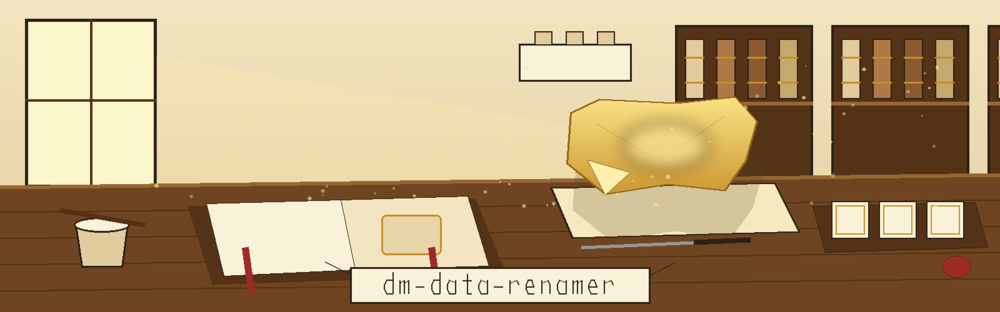
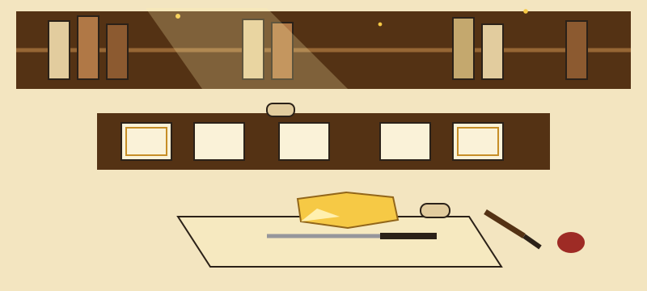

A bench before any title gets tied on. One loose gold sheet catches the first fall of window light. Cushion and knife wait beside it. Bookplates rest in their tray. Nothing carries a label yet.
❦ Plate the first: the trade
dm-data-renamer, catalogue entry

Rename columns or tables in a database or file to generic names (e.g., column1, table_a) while preserving relationships based on foreign keys or naming conventions. Useful for quickly anonymizing schema information.
Columns or tables inside a database or file receive generic names instead; column1 and table_a are the printed examples. Relationships survive, held either by foreign keys or by naming conventions. Quick anonymizing of schema information is the point.
Focused on Tools designed to generate or mask sensitive data with realistic-looking but meaningless values
Keys Keep Pointing True
A table keeps its rows. A column keeps its values. The shape underneath stays exactly where it was, while the surface the world reads becomes gold and generic at once.
❦ Plate the second: fetching, plus one repair shown openly
Note the hyphen inside the organisation name. Directly underneath, the fault, confessed: the README prints that organisation with no hyphen at all, so anyone copying its address letter for letter knocks at the wrong house. The line above is marked as a correction. It is not original wording.
❦ Plate the third: the invocation shape, then stop
Usage
./dm-data-renamer [params]
Program first, bracketed parameters trailing. No worked call exists in the source.
Worked call: ABSENT. No example call is printed in the source, so none is printed here.
Database file: ABSENT. No database file gets named in the source, so none is named here.
Table names beyond column1 and table_a: ABSENT. No table gets named beyond the two generic examples.
❦ Plate the fourth: the controls, in README order
Parameters
-h: Show help message and exit
--prefix_table: No description provided
--prefix_column: No description provided
--dry_run: Perform a dry run without applying changes.
--log_file: No description provided
Three gaps, printed as gaps. Neither prefix flag is explained here, however suggestive its name looks; the source declines to explain them, so this plate declines too. The log file flag is in the same state.
❦ Plate the fifth: failure and success, at full size
When a Rename Fails
Exit 1: the input is not a readable database.
Exit 1: the database holds no user tables.
Exit 1: any table or column rename fails.
Rolled back run. When failure strikes, changes roll back where the database allows it. This card carries the small unlaid leaf in its top corner, corners still lifted: ✦ (unlaid leaf)
Exit 0, together with the completed successfully line, certifies that every table and column rename succeeded.

❦ Plate the sixth: two licence facts, kept apart
License
Fact one: the repository LICENSE itself gives MIT terms, dated 2025 to 2026. Its holder is drawn by outline only: first a span of years, next a two word pen name, next a bracketed given name shorn to one initial, last a bracketed handle with an at sign at its front. The signature is not reproduced here.
Fact two, labelled a site correction: the README closing line, respelled so the organisation carries its current hyphen, the hyphen the published line omitted.
Site correction: Copyright (c) ShadowGuard-AI
❦ Plate the seventh: the cushion
One sheet lifted before any gold is committed
Search arrivals land here, where a single sheet gets lifted and examined before any gold is committed.
Caution brought you? Then learn the dry run first, a rehearsal applying nothing.
Failure brought you? Then take the three exit 1 grounds and the rollback, set beside a drawing of a lifted sheet returned unharmed to its book.
Provenance brought you? Then take the fetching history: unhyphenated banner inside the record, hyphenated correction admitted on the plate.
Database keepers. Schema auditors. Students anonymizing a coursework dump. Hobbyists stripping a family tree file before sharing it. The cushion serves each the same patience: one sheet lifted, held to the light, laid down only when the visitor nods. Breath held. Hands steady. Gold dust in the light shaft.
Gesso first. The gilder paints the raised cushion, lets it dry, then breathes on it, slow and warm, at the moment of laying. Breath wakes the surface. Too dry and the leaf will not take. Too wet and it drowns.
The finished page: leaf laid, leaf burnished, bench at rest, edition complete, press quiet in the next room.
❦ The bench record, verbatim
The live README, in full

# dm-data-renamer
Rename columns or tables in a database or file to generic names (e.g., column1, table_a) while preserving relationships based on foreign keys or naming conventions. Useful for quickly anonymizing schema information. - Focused on Tools designed to generate or mask sensitive data with realistic-looking but meaningless values
## Install
`git clone https://github.com/ShadowGuardAI/dm-data-renamer`
## Usage
`./dm-data-renamer [params]`
The run exits 1 when the input is not a readable database, when it holds no user tables, or when any table or column rename fails. In the failure case the changes are rolled back where the database allows it. The completed successfully line and exit 0 mean every table and column rename succeeded.
## Parameters
- `-h`: Show help message and exit
- `--prefix_table`: No description provided
- `--prefix_column`: No description provided
- `--dry_run`: Perform a dry run without applying changes.
- `--log_file`: No description provided
## License
Copyright (c) ShadowGuardAI